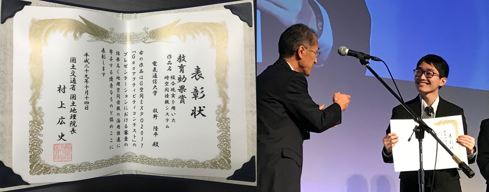
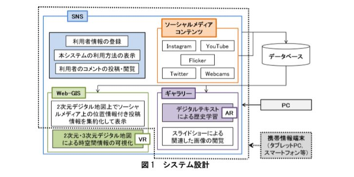

受賞歴6：第27回地理情報システム学会研究発表大会 大会優秀発表賞 受賞(第27回地理情報システム学会研究発表大会 首都大学東京:2018年10月)
10月20日（土曜日）～21日（日曜日）に首都大学東京で開催された第27回地理情報システム学会研究発表大会において、大会優秀発表賞を受賞しました。
大会優秀発表賞は、修士号取得前の本学会の学生会員のうち、学会での講演発表が特に優秀であると認められた者に授与される賞です。
【題目】 「時空間情報と複合現実を用いた地域学習支援システム」
【受賞者】 牧野隆平
受賞歴5：「初等中等教育におけるGISを活用した授業に係る優良事例表彰」 地理情報システム学会賞 受賞(第27回地理情報システム学会研究発表大会 首都大学東京:2018年10月)
地理情報システム学会では、初等中等教育現場においてGIS（地理情報システム）を実践的に活用した授業の普及・展開契機とするため、先導な取り組みを実践している教員やグループを対象とする表彰制度を2010年度に創設しています。
この制度は、地理情報システム学会（主催）、毎日新聞社、国土交通省、日本地図センター、日本地理学会、人文地理学会（共催）、
ESRIジャパン株式会社（協賛）で開催され、地理情報システム学会、毎日新聞社、国土交通省、文部科学省から構成する審査委員会を開催し、表彰事例を選定しました。
【受賞テーマ】「初等中等教育における時空間情報システムの利活用」
受賞歴4：学長賞 受賞(電気通信大学:2018年3月)
（2018年3月） 毎年、研究活動において著しい成果を上げた人に贈られる、学長賞を受賞した。
受賞歴3：Geoアクティビティコンテスト2017 教育効果賞 受賞(国土交通省国土地理院主催 G空間EXPO 日本科学未来館:2017年11月)
2017年10月12日（木）から14日（土）にお台場の日本科学未来館において、G空間EXPO2017（Geospatial EXPO 2017 Japan）が開催された。
これは、地理空間情報高度活用社会（G空間社会）の実現へ向けて、産学官が連携し、地理空間情報と衛星測位の利活用を推進する場として、2010年から開催されている。
3日目の13日（金）のメインステージプログラムの「Geoアクティビティコンテスト」に出場し、「複合現実を用いた時空間情報システム」と題するプレゼンテーションを行った。
このコンテストには、産官学を問わず多くの応募があり、予備審査を通過した16組のみ、G空間EXPOでの本審査に進むことができる。学生の本審査出場は珍しい例である。
翌14日（土）のメインステージプログラムの表彰式で、教育効果賞を受賞した。この賞は、地理空間情報に関する教育に多大な貢献が期待できる応募者に授与される賞である。
受賞歴2：UECものづくりコンテスト2017 優秀賞 受賞(電気通信大学:2017年6月)
（2017年6月） 応募総数36チームのうち、23チームが二次審査に進み、ビデオ審査およびポスターセッションによるアイディア提案が行われ、学内および学外の方の審査員による厳正なる審査が行われ、優秀賞（優勝）を受賞した。
受賞歴1：社会貢献賞 受賞(電気通信大学:2014年3月)
調布市全域の小学校の代表生徒を集めて、理科・科学実験の補助ボランティアを約一年行った。特に、上野の国立科学博物館引率では、小学生達に展示物の紹介を行った。
その活動が大学に伝わり、卒業式の日に社会貢献部門で社会貢献賞を授与された。
研究業績6:研究の特許出願
【メディアリリース】地理情報システム（GIS）と複合現実（MR）を用いた時空間情報システムの開発(2018年5月)
－現実空間と仮想空間で時空間情報を可視化することにより教育及び観光分野の支援に貢献－
地理情報システム（Geographic Information Systems: GIS）、仮想現実（Virtual Reality: VR）や拡張現実（Augmented Reality: AR）の普及と幅広い分野での利活用という学術的・社会的背景を踏まえ，Web-GISと複合現実（Mixed Reality: MR）等を用いて、時空間情報を可視化するシステムを開発した。開発したシステムの特性は、教育及び観光分野において、利用者が自身の嗜好や状況に応じて利用可能な独自機能を持つ。